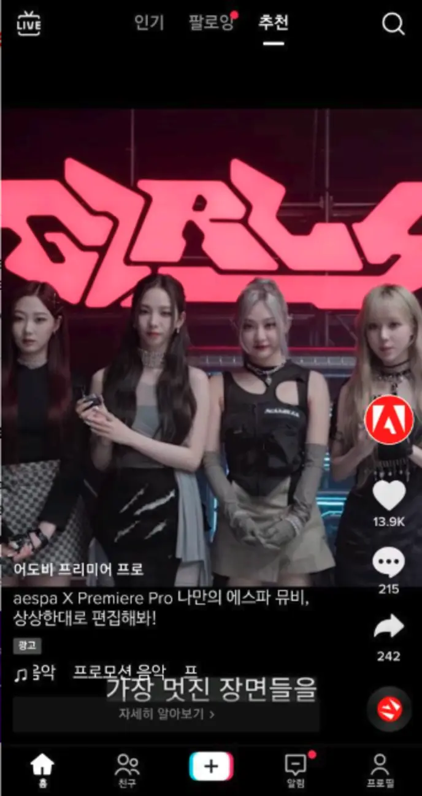

Built to move
aespa music-video assets and an editing challenge gave the story motion, sound and a clear product action.
Adobe Korea · TikTok channel expansion · 2022
As Digital Marketing Manager, I spotted the growth opportunity, built a de-risked client case and secured buy-in to extend Premiere Pro into TikTok.
Opportunity discovery
The opening I saw
The creative was music-led, participation-based and naturally relevant to younger audiences. Rather than treating TikTok as an extra media line, I framed it as the platform where this specific idea could work harder.
aespa music-video assets and an editing challenge gave the story motion, sound and a clear product action.
The campaign’s strongest potential sat with young fans already interested in music, entertainment and creative tools.
For You discovery and full-screen, sound-on viewing matched the campaign better than a standard display placement.
A prior demand campaign provided a clear baseline, so the expansion could be judged on qualified traffic—not enthusiasm alone.
Creative fit
Product inside culture
The partnership did more than place aespa beside Premiere Pro. It invited fans to imagine and edit their own music video—turning celebrity attention into a hands-on reason to understand the product.
Client influence
From hesitation to a bounded yes
Client concern

How I answered with evidence
01 · Reframe
Shift the debate to: can we protect the brand and beat a known baseline?
02 · De-risk
Lock approved creative, Inventory Filter settings and monitoring before launch.
03 · Measure
Use visits and engaged visits to separate qualified response from surface engagement.
04 · Close
Secure approval by defining the test, risk controls and success criteria before launch.
I made the client comfortable saying yes to a brand-safe, measurable experiment—not asking them to commit to the channel on belief alone.
Proof
The result
The approved TikTok test created almost twice the visits and nearly fourteen times the engaged visits—without materially increasing test spend.
| Campaign | Spend | Visits | Engaged visits | Rate |
|---|---|---|---|---|
| TikTok expansion | $16.7K | 6,085 | 1,330 | 21.86% |
| Prior demand | $15.9K | 3,039 | 96 | 3.16% |
Comparison: Q3 aespa × Premiere Pro TikTok activity vs Q2 Njob demand campaign. Results shown are campaign-review figures.
The takeaway
The test did more than validate one campaign. It gave Adobe a reusable proof point for later products whenever creative, audience and platform fit aligned.